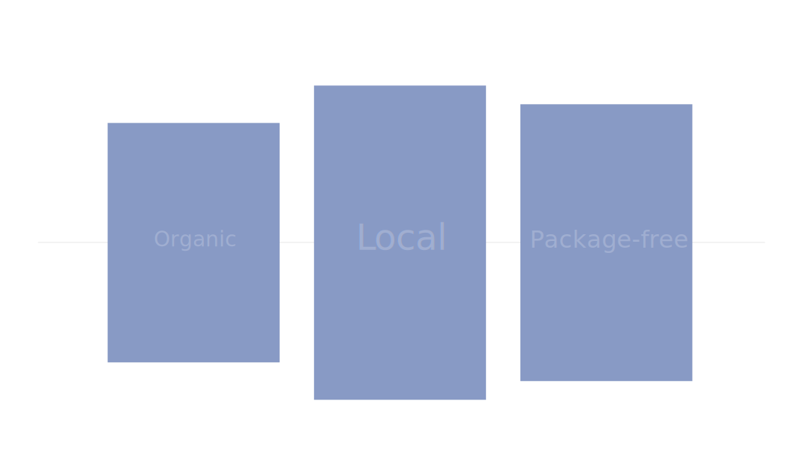
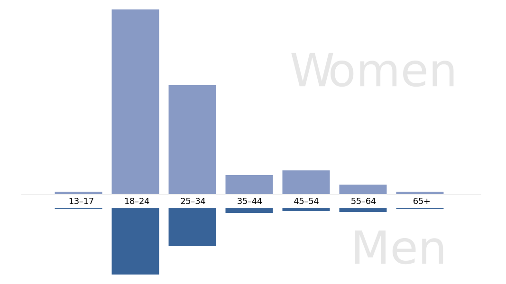
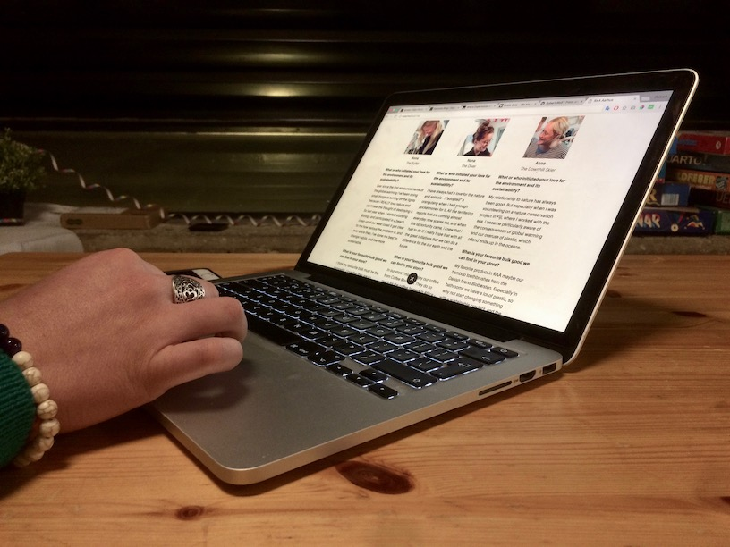

RAA
Aarhus
back
- Value creation
- Personas
- Gestalt Principles
- Mobile First
Kick-start a new business with a powerful website? RAA Aarhus is a brand new package-free store, the only one of its kind in Aarhus. Our goal was to create a powerful representation of their store online.
Discovering
To begin with, we went down the store to interview the owners/workers and the customers. We have also analysed demographics of their facebook page fans. In addition to that, we have created an online survey inquiring general interest in this concept among the young generation.
There’s no point in researching just to get some data. Rather, it’s important to focus on the data that are actually valuable and get answer for the key questions of the project.
With such an extensive research we we able to precisely define their target group and create detailed personas. We also learned about customers behaviour. For example, customers value local products over organic, and although they support the concept of eco-friendly store, it seems like they still care about the prices the most.
I’ve learned that it’s one need to be critique to his own argumentation and always stay open to new points of view.
Creating
We wanted to come up with something extraordinary, yet very intuitive and easy-to-use. A grid layout, replicating an unusual shape of the store’s window became the core of the design. We took advantage of the gestalt principles such as continuity and closure, and using animations and overlays, we created an enjoyable and memorisable user’s experience.
Designing in a team can be challenging because everyone has their strong opinion how should the product look like. Sometimes it can be painful to see someone rejecting your dearest idea. But, this was perhaps the biggest lesson I’ve learnt:
We have to forget about who’s idea it was, and treat all ideas in the team as if they were our own. We can modify them, combine them and be just as proud of them as are proud of our work as a team. Only this way we can objectively decide for the best solution.
Turning such a complex design into code was probably the most challenging part of the project. We took advantage of the jQuery framework in order to make all the animations as fluid as possible. For smoother experience, we used JavaScript to navigate between subpages without reloading the site.
Evaluating
While testing our prototype, we have discovered a few minor problems. We gathered several suggestions for improving the content (e.g. making important information more accessible). Some users were confused by the unusual structure of the website, but overall they really appreciated the continuity of the navigation.
To me, user testing is always an eye-opening moment. It’s funny how blind we become to our own mistakes while creating. Seeing another person using the product is incredibly inspiring and it motivates me to make further improvement.